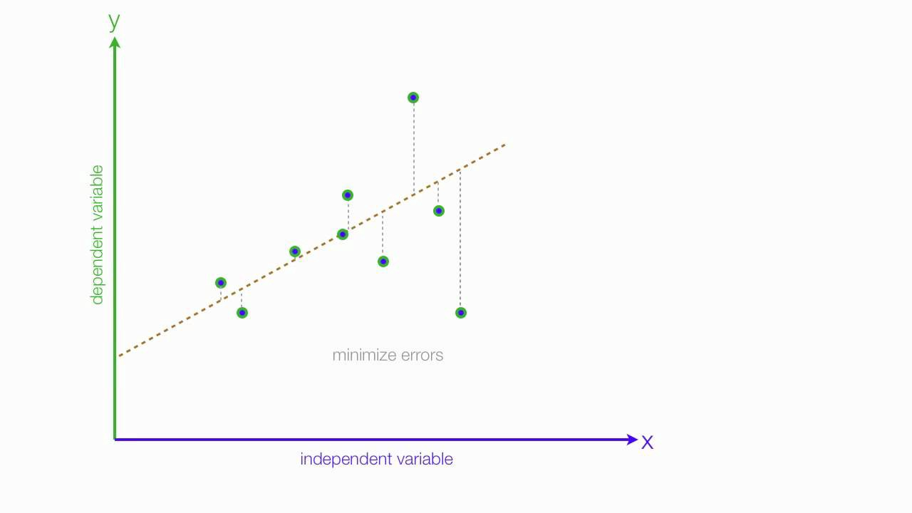

Introduction to Linear Regression
Posted on January 28, 2020

Introduction
Steps to take prior to creating linear regression models.
Before we start diving into Linear Regression, I would like to emphasize how important it is to understand the problem before starting working with data. We often see statisticians start talking about the slope, distribution and other actual analysis without formulating the problem. As Albert Einstein once said, “The formulation of a problem is often more essential than its solution, which may be merely a matter of mathematical or experimental skills”. Hence, like every other data analysis execution, we need to formulate the problem by collaborating the matter experts in order to understand the background of the particular domain, the objective of the analysis, the alignment of the output and further put together the problem into statistical terms.
Understanding the data collection is as important as formulating the problem, since certain collection processes will have an impact on the data and without knowing certain aspects of the collection process, we might end up coming up with wrong conclusions at the end of our analysis. Best practices in terms of understanding the data collection are;
Once we formulate our problem and understand how the data was collected, we can perform cleaning and initial data analysis. We can simplify this by;
Use of Linear Regression
Regression gives us simply the linear relationship of two or more variables within a dataset. We have a dependent variable (or predictor variable) and has a relationship with independent variable (response variable).
Let’s review some examples and see if we can find the relationship between variables. As we are reviewing these datasets, we will also talk about the certain assumptions that we need to make or certain conditions that we need to meet in order to use linear regression properly.
Our first data set is on teenage gambling in Britain.
As we don't have any physical background on the domain of gambling, we can create an example problem statement in order to guide our analysis. This can simply be “Why do British teenagers gamble?” or “Does income or status have any impact on British teenager’s gambling habit?” or “Can education help reduce gambling in British teenagers?
There are no missing values in our dataset. Looking at summary statistics can give us some indication if there are any data errors. For example, there are teeangers that don't spend any money on gambling. I think that is believable. The minimum income is 0.6 pounds per week. Does that make sense? Since we don't see any obvious errors such as “0” income or “2” sex value, let’s assume that the person who did the survey was accurate gathering these data.
Based on our problem statements we defined earlier (“Does income or status have any impact on British teenager’s gambling habit? for example), the independent or response variable “y” is “gamble”. We can see that there are some linear correlation between gamble and income. We do see some other correlations between verbal and status for example, however, since we are trying to find a solution to a specific problem, we can focus on gamble response variable and income dependent variable(predictor).

Before we start looking to create regression model, predictive value, errors, intercept or slope, we should look to see if the current relationship between income as the predictor and gamble as the response variable meets certain assumptions and conditions that is required for linear regression.
In order for us to create a linear regression model, we need to make sure the relationship is linear, there is independence of errors meaning, the residuals are not influencing each other and they are not following a certain pattern, there is homoscedasticity between income and gamble so that the data does not look like a funnel and normality of error distribution where the observations are mostly around the predicted value and evenly distributed.
I find the easiest way to explain these assumptions are through visualization. Here are four figures that explains each assumption that the dataset needs to meet for linear regression.
When we look at our regression line and the positions of each observation, we can see that there is somewhat linearity, the errors are not dependent from each other, residuals are not creating any funnel look alike pattern and they are distributed normally. This means that, as our independent variable income increases the spending on gamble (our dependent response variable) increases as well. There is a definite positive, linear relationship between income and gamble.
We won't be expanding our analysis any further and create regression model in this article as this meant to be an intro to linear regression however we can explore other datasets in a similar way.
Let’s look at another study where we look at 97 men with prostate cancer who were due to receive a radical prostatectomy.
As we can see, we definitely need to understand the variable descriptions and must consult to domain expertise around prostate in order to fully formulate the problem. Below are the description of each variable;

We have 97 observations, 9 attributes. When we look at the minimum and maximum values, the only questionable variables we have is svi: seminal vesicle invasion and pgg45: percentage Gleason scores 4 or 5. Unfortunately, we won't be able to confirm if these values make sense or a possible data error without having any medical expertise. Hence, we will assume the statistician who worked on creating this data set did an accurate data collection.
When we look at the correlation between variables, let’s keep in mind we are focusing on the defined response variable of lpsa, we see that cancer volume has the strongest relationship.
When we look at the distribution of each observation around the linear line, we see the linearity, independence of errors, homoscedasticity and normality. We can firmly say that there is a positive linear correlation between lcavol independent variable and lpsa dependent variable.
Conclusion
Regardless of the statistical analysis, we need to first formulate a problem statement and understand the collection of data. We can do this by collaboration with domain experts, surveyors or business stakeholders. By following the simple steps of data summary statistics such as a summary of numerical variables, distribution, correlation, outliers, data errors and data types, we can point data errors and define analytical approach including Linear Regression. For us to be able to use linear regression accurately, we need to make sure the linear regression conditions are met. As we are looking at the data not from a researchers perspective but rather from a data analyst or data scientist vision, we do not necessarily perform every test for each condition but rather make an assumption of these conditions by looking at certain distribution plots.